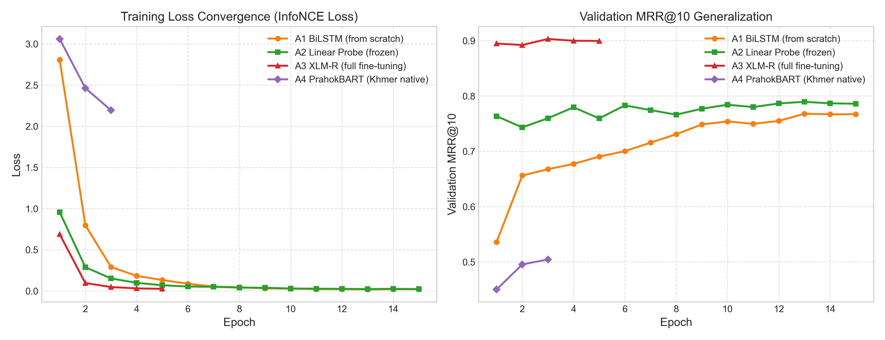
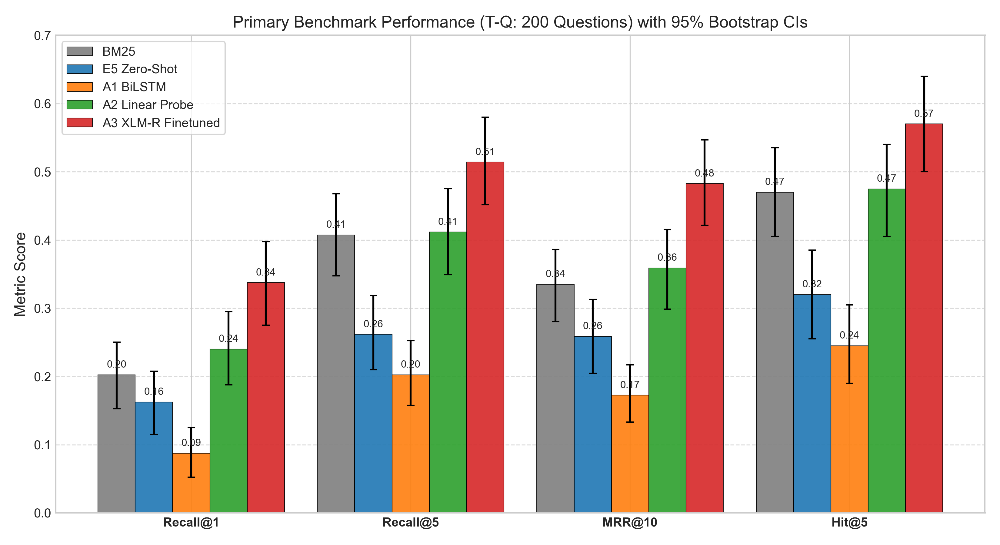

Can Deep Learning Match Everyday Khmer Questions to Official Statutory Articles?
«តើកិច្ចសន្យាត្រូវបង្កើតឡើងដោយរបៀបណា យោងតាមក្រមរដ្ឋប្បវេណី?»
"How is a contract formed under the Civil Code?" — Citizens ask questions in conversational language. Statutes are drafted in formal legal prose across nearly two thousand articles.
Author: Mengchheang Long · Bachelor of Software Engineering, Department of Engineering
Lecturer: Mr. Soklong HIM · Academic Year 2026–2027 · Format: 10-Min Talk + 5-Min Q&A
Keyword overlap is misleading on formal statutory codes
«តើកិច្ចសន្យាបង្កើតឡើងដោយរបៀបណា?»
Target: Civil Code Art. 336 (Offer and Acceptance) & Art. 311 (Contract Definition).
BM25 Top Match: Article 623 (Manner of dividing proceeds in co-ownership)
Trap: Matched the colloquial question word «របៀប» (manner/how) instead of contract law!
Khmer text contains zero whitespace between words: «ការបង្កើតកិច្ចសន្យា...».
Keyword search relies on CRF tokenizers; a single compound split error breaks term matching.
of BM25's retrieval misses on human questions are caused purely by Vocabulary Mismatch.
Project queries and legal articles into a continuous dense vector space where proximity reflects semantic meaning rather than shared keywords.
Solving 1990s legacy font encoding to extract 1,976 consecutive articles without OCR noise
Complete hierarchy retained as metadata for retrieval filtering and context attribution.
Training without human QA pairs while strictly isolating test evaluation
Zero public Khmer legal QA datasets exist. We leveraged the inherent structure of statutory articles:
Query: Article Title («ការបង្កើតកិច្ចសន្យា...»)
Passage: Article Body (with title line stripped via regex)
Removed 270 duplicate titles (e.g. 63 identical penalty titles) to prevent ambiguous labels ➔ 1,471 unique pairs.
All 261 articles cited by the 200 benchmark questions were strictly removed from training and validation!
Deterministic split with fixed seed 42. Test sets evaluated strictly once.
Testing capacity, pre-training, parameter efficiency, and language specialization
Hypothesis: Can a model learn legal semantics without any pre-training?
Hypothesis: Can a fast 5.9s linear head adapt generic multilingual space?
Hypothesis: Does full self-attention bridge citizen speech and legal clauses?
Hypothesis: Does native Khmer pretraining beat larger multilingual models?
Pulling matching query-article pairs together while repelling in-batch negatives
In a batch of B = 32 pairs, for query qi, passage pi is positive. The remaining 31 passages serve as negatives:
Diagonal = Positives · Off-Diagonal = 31 Negatives
Maximizes mutual information between query and passage representations:
Why τ = 0.05? Sharp scaling creates strong gradient penalization on hard negative false positives.
best.pt and last.pt with full RNG state and --resume.Empirical learning curves reveal overfitting vs capacity bottleneck vs generalization

Generated directly from results/figures/learning_curves.pngTrain loss collapsed to 0.02 while validation loss stalled at 0.82. ~1,100 pairs cannot train randomly initialized word embeddings from scratch.
Validation loss hovered at 0.55. A single linear layer cannot warp rigid multilingual embeddings into legal geometry.
Validation loss descended to 0.1032, achieving Validation MRR@10 of 0.9095. Attention heads successfully adapted.
Primary Benchmark (T-Q: 200 real human legal questions evaluated on full 1,976 articles)
| Model | Params | Recall@1 | Recall@5 | MRR@10 |
|---|---|---|---|---|
| BM25 Baseline | 0 | 0.2025 | 0.4075 | 0.3350 |
| Multilingual-E5 | 278M (Fz) | 0.1625 | 0.2617 | 0.2588 |
| A1: BiLSTM | 1.97M | 0.0875 | 0.2025 | 0.1724 |
| A2: Linear Probe | 0.59M | 0.2400 | 0.4117 | 0.3591 |
| A3: XLM-R FT 🏆 | 278.04M | 0.3375 | 0.5142 | 0.4827 |
| A4: PrahokBART | 35.83M | 0.0525 | 0.1517 | 0.1035 |
🏆 Statistical Confirmation (Paired Bootstrap 10,000 resamples):
A3 beats BM25 by +10.67% Recall@5 (p = 0.0002) and +44.1% relative MRR@10 (p = 0.0001). A2 probe achieves true statistical parity with BM25 (p = 0.9031).

Primary Benchmark: Recall@1, Recall@5, MRR@10 with 95% bootstrap CIsWhy could our best model retrieve titles almost perfectly, but struggle on real questions?
Queries mirror formal, title-based training pairs.
Recall@5 on Titles (MRR@10: 0.9456)
The model learned statutory legal terminology almost flawlessly.
Queries introduce conversational syntax and colloquial phrasing.
Recall@5 on Questions (MRR@10: 0.4827)
Authentic linguistic distribution shift causes a ~48% performance drop.
The Key Research Finding: A model can achieve 99% on title-based benchmarks while only getting 51% on real user queries. Choosing a stronger architecture (A3 vs BM25) gave a +44% MRR boost, but the training data distribution defines the real-world performance ceiling!
Categorizing failure modes across 200 benchmark questions (from results/error_analysis/)
Near-misses push A3 Recall@10 to 64.3%, showing strong candidate ranking.
Demonstrating semantic retrieval advantage on authentic benchmark query TQ-CIV-009
«តើនរណាខ្លះអាចស្នើសុំឱ្យតុលាការប្រកាសបើកអាណាព្យាបាលទូទៅ?»
"Who can request that a court initiate general guardianship?" · Expected Target: Civil Code Article 24Superficial word matching fails on legal concepts
Learned legal semantic embeddings bridge phrasing
90-Second Demo Sequence: (1) Open localhost:8501 → (2) Select ⭐ [LIVE DEFENSE DEMO] TQ-CIV-009 → (3) Show BM25 misses Art. 24 → (4) Switch to A3 and show Art. 24 at Rank 1 → (5) DeepSeek synthesizes answer citing Article 24 with green [Verified Citation] badge.
Summary of findings from comparing four neural retrievers on 1,976 Cambodian articles
From-scratch BiLSTM (A1) severely overfit (loss 0.02 → val 0.82). ~1,100 legal pairs are insufficient to initialize Khmer word embeddings without catastrophic sparsity.
Linear probing (A2) merely achieves parity with BM25 (p = 0.9031). Only end-to-end backpropagation across all 12 transformer layers adapts attention to Khmer legal phrasing.
99.32% on title retrieval vs 51.42% on human benchmark questions confirms that model architecture is only half the battle. Real questions introduce conversational vocabulary mismatch.
100% consecutive Limon extraction (0 OCR artifacts) · Zero data leakage protocol · 138 passing unit tests · Open-source code under GPL-3.0 · Fully reproducible with random seed 42.
Thank you, Mr. Soklong and committee members. I welcome your questions.
Full technical specifications across all four implemented PyTorch neural retrievers
| Specification | A1: BiLSTM | A2: XLM-R Linear Probe | A3: XLM-R Full Fine-Tune | A4: PrahokBART |
|---|---|---|---|---|
| Base Model | None (Scratch) | multilingual-e5-base |
multilingual-e5-base |
prahokbart-base |
| Architecture | 1-Layer BiLSTM | Transformer + Linear | 12-Layer Transformer | 6-Layer BART Encoder |
| Total Parameters | 1,970,784 | 278,634,240 | 278,043,648 | 35,830,784 |
| Trainable Params | 1,970,784 (100%) | 590,592 (0.21%) | 278,043,648 (100%) | 35,830,784 (100%) |
| Embedding Dim | 512 | 768 | 768 | 768 |
| Tokenizer | khmer-nltk (Words) |
XLM-R SentencePiece (250k) | XLM-R SentencePiece (250k) | BART SentencePiece (32k) |
| Pooling Method | Masked Mean Pooling | Mean Pooling | Mean Pooling | Mean Pooling |
Mathematical formulations for InfoNCE contrastive loss, Recall@k, and MRR@10
InfoNCE optimizes a lower bound on mutual information I(Q; P):
When τ = 0.05, the similarity distribution becomes sharp, heavily penalizing hard negative false positives instead of diffusing gradients.
Rigorous hypothesis testing confirming A3 superiority is not stochastic variance
| Comparison | Metric | Delta (Model − Baseline) | 95% Confidence Interval | Win / Loss / Tie | p-value | Significance |
|---|---|---|---|---|---|---|
| A3 vs. BM25 | Recall@5 | +0.1067 | [+0.0500, +0.1633] | 41 / 13 / 146 | 0.0002 | p < 0.001 (Highly Significant) |
| A3 vs. BM25 | MRR@10 | +0.1477 | [+0.0883, +0.2070] | 72 / 25 / 103 | 0.0001 | p < 0.001 (+44.1% Rel. Gain) |
| A2 vs. BM25 | Recall@5 | +0.0042 | [−0.0508, +0.0600] | 33 / 34 / 133 | 0.9031 | Not Significant (Parity) |
| A3 vs. A2 | Recall@5 | +0.1025 | [+0.0467, +0.1583] | 38 / 12 / 150 | 0.0004 | p < 0.001 (FT > Probe) |
Methodology: Paired studentized bootstrap with 10,000 resamples directly on query-level delta values Δi = si(A) − si(B). The 95% confidence interval for A3 vs BM25 is strictly positive, definitively proving neural superiority.
Instant file path and function reference for committee oral questioning (§6.3)
| Component | File Path | Key Functions / Classes |
|---|---|---|
| A3 Full Fine-Tune | src/dl/models/xlmr_finetune.py |
XLMRFullFinetuneRetriever, forward(), _pool() |
| A2 Linear Probe | src/dl/models/linear_probe.py |
XLMRLinearProbeRetriever, frozen backbone projection |
| A1 BiLSTM Dual Encoder | src/dl/models/bilstm.py |
BiLSTMEncoder, pack_padded_sequence |
| A4 Khmer PrahokBART | src/dl/models/prahokbart.py |
PrahokBARTDualEncoder, mean pooling over attention mask |
| Contrastive InfoNCE Loss | src/dl/losses.py |
InfoNCELoss, symmetric logit scaling by τ = 0.05 |
| Data Quarantine Protocol | src/dl/prepare_splits.py |
quarantine_test_articles(), strip_title_from_passage() |
| Limon FSM Extractor | src/infrastructure/extractors/limon_converter.py |
LimonConverter, syllable reordering rules |
| Streamlit Interface | src/interfaces/ui/app.py |
execute_unified_retrieval(), load_cached_torch_embedder() |